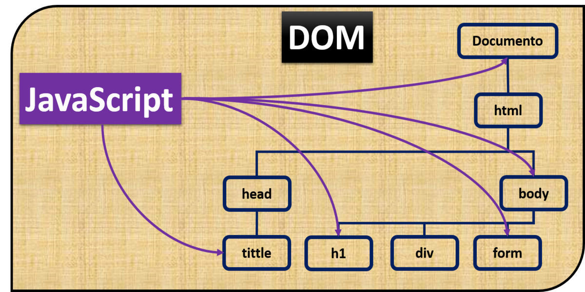
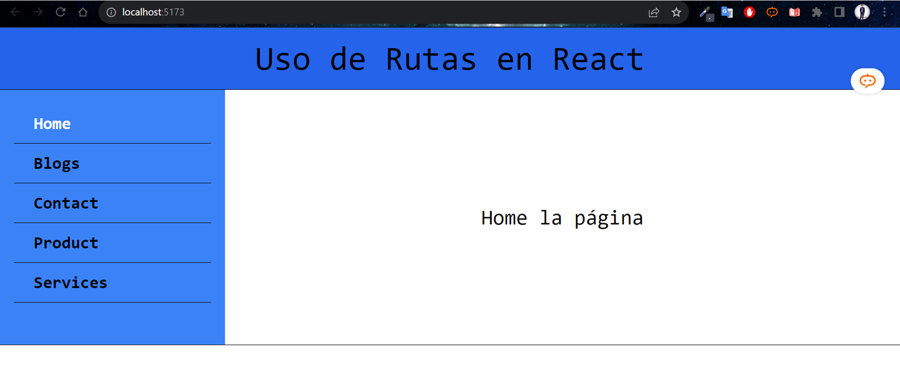
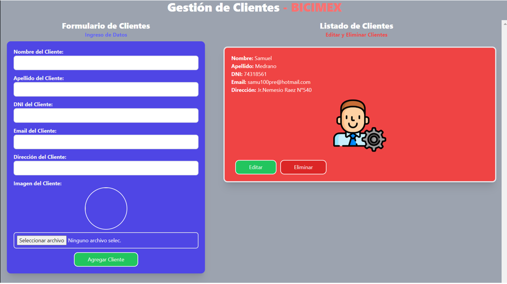
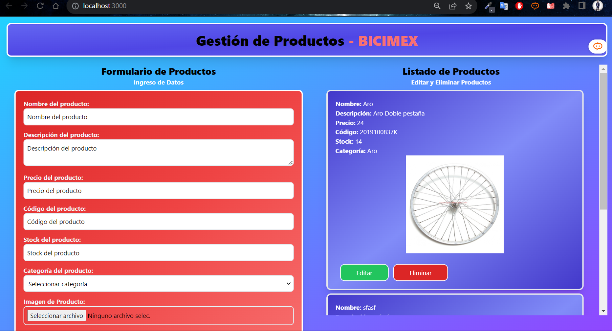
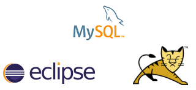
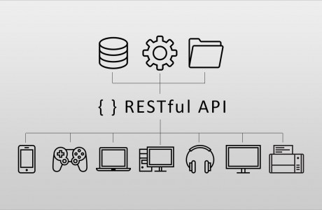

Qué se desarrollo en clases ?
Repositorio Git Hub Contenido
Fundamentos de las tecnologías web
Fundamentos de las tecnologías web es un curso fascinante que me ha proporcionado una sólida introducción a las aplicaciones para Internet y el desarrollo web. A lo largo del curso, he adquirido conocimientos en el desarrollo front-end y back-end, lo que me ha permitido crear sitios web interactivos y funcionales.
En la parte de desarrollo front-end, he aprendido a utilizar HTML, CSS y JavaScript para crear páginas web atractivas y receptivas. Ahora puedo diseñar interfaces atractivas y garantizar una experiencia de usuario óptima en diferentes dispositivos.
Por otro lado, en el desarrollo back-end, he adquirido habilidades en lenguajes de programación como Python, Ruby y PHP, junto con el uso de frameworks populares como Django, Ruby on Rails y Laravel. Esto me ha permitido construir aplicaciones web dinámicas, administrar bases de datos y crear API para una comunicación eficiente entre diferentes sistemas.
Además, el curso también ha abordado el aspecto del diseño de interfaces y la experiencia del usuario (UX Design). He aprendido a crear mockups y prototipos que me han ayudado a planificar y diseñar interfaces intuitivas y atractivas.
Al final de esta sesión se obtuvo como resultado poder diseñar el modelado de nuestro portafolio en la plataforma de FIGMA
Herramienta de desarrollo
Visual Studio Code es una herramienta de desarrollo altamente versátil que ha mejorado significativamente mi productividad y eficiencia en el desarrollo de proyectos. Su interfaz intuitiva y personalizable, junto con su paleta de comandos y terminal integrada, me han permitido trabajar de manera ágil y cómoda.
Lenguaje Marcado de Hipertexto, Hojas de Estilos
El lenguaje marcado de hipertexto y las hojas de estilos son elementos fundamentales en el desarrollo web. He tenido la oportunidad de trabajar con ellos en el desarrollo de un sitio web en mi trayectoria como desarrollador. El lenguaje marcado de hipertexto me ha permitido estructurar el contenido de manera clara y semántica, mientras que las hojas de estilos han sido clave para darle vida y estilo a las páginas. Además, he utilizado diversas librerías y frameworks para agilizar el proceso de desarrollo y añadir funcionalidades adicionales. El trabajo de desarrollo de un sitio web ha sido una experiencia enriquecedora donde he aplicado estos conocimientos y he logrado crear una presencia en línea efectiva y atractiva.
Asi mismo se desarrollo una práctica referida a Emmet como se observa:
Repositorio Git Hub
Programación Front-End Javascript.
La programación front-end con JavaScript ha sido una parte apasionante de mi carrera. A través del lenguaje JavaScript, he adquirido habilidades en el manejo de números, strings, objetos y métodos, así como en el uso de booleanos, funciones y funciones flecha. Además, he explorado el desarrollo de gráficos y he tenido la oportunidad de trabajar en la creación de un logo SVG para FIS. Esta experiencia me ha permitido mejorar mis habilidades en programación y diseño web, y me emociona seguir creando proyectos innovadores en el campo del desarrollo front-end.
Durante esta sesión se obtuvo como resultado utilizando boostrap y tecnologías de desarrollo web , clonar una página a detalle.
Repositorio Git HubSemana 4
Manejo del DOM con Javascript
El manejo del DOM con JavaScript ha sido una parte fascinante de mi trayectoria en el desarrollo web. A través de este lenguaje, he aprendido a utilizar métodos y propiedades para interactuar con los elementos del DOM y modificar su contenido, estilos y atributos de manera dinámica. Además, he explorado el uso de animaciones para crear efectos visuales atractivos y mejorar la experiencia del usuario. Uno de los proyectos destacados en este campo ha sido el desarrollo de un juego utilizando JavaScript, donde he aplicado mis conocimientos para crear una experiencia interactiva y entretenida. Estoy emocionado por seguir ampliando mis habilidades en el manejo del DOM y explorar nuevas formas de utilizar JavaScript para desarrollar proyectos web innovadores.
Se desarrollo al final de esta sesión el juego de una pelota que puede pausarse , cambiar el sentido de movimiento y reiniciar este movimiento
Desarrollo FrontEnd con Framework JS
El desarrollo Front-End con Framework JS ha sido una experiencia emocionante y enriquecedora en mi trayectoria como desarrollador web. He adquirido conocimientos sobre la estructura y operación de los frameworks de renderizado en el lado del cliente, lo que me ha permitido crear aplicaciones web dinámicas y eficientes. Además, he aprendido a gestionar dependencias y utilizar herramientas de creación de proyectos para agilizar mi flujo de trabajo. Durante el laboratorio 01A, tuve la oportunidad de instalar y configurar un proyecto, así como manejar sus dependencias de manera efectiva. Por otro lado, el desarrollo basado en componentes utilizando JSX, PROPS y CHILDREN ha sido una parte fundamental de mi aprendizaje. He podido crear componentes reutilizables y estructurar mi código de manera modular, lo que ha mejorado mi eficiencia y calidad en el desarrollo. Estoy emocionado por seguir explorando y aprendiendo más sobre el desarrollo Front-End con Framework JS, y aplicar mis habilidades en la creación de proyectos web innovadores.
Se procedio a crear los proyectos con los diversos Frameworks(Vite,Remix,React y Node)
 Repositorio Git Hub
Repositorio Git Hub
Eventos, Condicionales y Bucles con Framework JS
El manejo de eventos, condicionales y bucles con Framework JS ha ampliado mi conocimiento y habilidades en el desarrollo Front-End. He aprendido a utilizar eventos para capturar interacciones del usuario y responder de manera dinámica en la interfaz. Además, he explorado el renderizado condicional y iterativo, lo que me ha permitido mostrar u ocultar elementos según condiciones específicas y generar contenido de forma repetitiva. El manejo de formularios también ha sido una parte importante de mi aprendizaje, comprendiendo cómo interactuar con los datos ingresados por los usuarios y realizar validaciones. Durante el laboratorio 02A, tuve la oportunidad de aplicar estos conceptos y practicar con eventos, renderizado condicional e iterativo. Estoy emocionado por seguir perfeccionando mis habilidades en el manejo de eventos, condicionales y bucles con Framework JS, y utilizar estas técnicas para crear experiencias interactivas y dinámicas en mis proyectos web.
Se logro modificar los elementos dentro del Vite-React
 Repositorio Git Hub
Repositorio Git Hub

Fundamentos de las tecnologías web
La utilización de estilos en Framework JS ha sido fundamental para crear interfaces atractivas y personalizadas en mis proyectos de desarrollo Front-End. He aprendido diferentes técnicas para aplicar estilos, como los estilos en línea, las hojas de estilo externas y los módulos de estilos, lo que me ha permitido organizar y mantener el código de estilo de manera eficiente. Además, he explorado el uso de componentes de estilo proporcionados por el framework CSS, lo que ha simplificado la aplicación de estilos predefinidos y me ha permitido ahorrar tiempo en el desarrollo. Durante el laboratorio 02B, tuve la oportunidad de practicar la utilización de estilos y aplicarlos en mis proyectos. Estoy entusiasmado por seguir mejorando mis habilidades en la utilización de estilos en Framework JS y crear interfaces atractivas y visualmente agradables en mis aplicaciones web.
Asimismo se desarrollo una practica calificada de manejo de componentes dentro de react utilizando Vite.
 Repositorio Git Hub
Repositorio Git Hub
Semana de Consolidado
Durante la Semana de Consolidado, he tenido la oportunidad de repasar y consolidar los conocimientos adquiridos en diferentes áreas de desarrollo web. He dedicado tiempo a revisar y reforzar mis habilidades en el manejo del DOM con JavaScript, lo cual me ha permitido interactuar con los elementos de la página, aplicar estilos dinámicamente y crear animaciones fluidas.
También he profundizado en el desarrollo Front-End utilizando Frameworks de JavaScript. He comprendido la estructura y el funcionamiento de estos frameworks, así como la gestión de dependencias y las herramientas de creación de proyectos. Durante el laboratorio 01A, realicé la instalación y configuración de un proyecto, lo que me ha dado una base sólida para trabajar con Frameworks JS en el futuro.
En cuanto a la utilización de estilos en Frameworks JS, he explorado diferentes enfoques como los estilos en línea, las hojas de estilo externas, los módulos de estilos y los componentes de estilo proporcionados por los frameworks CSS. A través del laboratorio 02B, he practicado la aplicación de estilos y he obtenido resultados visualmente atractivos en mis proyectos.
Finalmente, he avanzado en el manejo de eventos, el renderizado condicional y el renderizado iterativo con Frameworks JS. Estas habilidades me han permitido crear interacciones dinámicas en mis aplicaciones web y aprovechar al máximo las capacidades de los frameworks.
Repositorio Git HubEnrutamiento y Consumo API
A lo largo de mi aprendizaje en el desarrollo web, he descubierto la importancia del routing o enrutamiento en la creación de aplicaciones web. Este concepto se refiere a la forma en que las aplicaciones web gestionan las solicitudes de los usuarios y toman decisiones sobre qué acción ejecutar en función de la URL que se está solicitando.
Para que mis aplicaciones sean interactivas y eficientes, es fundamental entender cómo el enrutamiento juega un papel clave en este proceso. Cuando un usuario interactúa con mi sitio web, cada clic o solicitud que realiza llega a través de una URL específica. Aquí es donde el enrutamiento entra en acción, ya que es responsable de interpretar esas URLs y dirigirlas al componente o controlador adecuado para su procesamiento y respuesta.
En otras palabras, el enrutamiento actúa como un mecanismo de asignación entre las URLs y los diferentes componentes o controladores que he creado previamente. Cada componente o controlador está diseñado para manejar una determinada solicitud, lo que me permite organizar y gestionar eficientemente las interacciones de los usuarios con mi aplicación web.
 Repositorio Git Hub
Uso de Hooks
Durante mi proceso de aprendizaje en el desarrollo web con React, he descubierto la utilidad y versatilidad de los hooks. Estas funciones especiales han revolucionado la forma en que los desarrolladores interactúan con React al permitirnos aprovechar sus características y gestionar el estado de componentes funcionales de manera más eficiente, sin la necesidad de utilizar clases de componentes.
Los hooks son una adición poderosa a React que nos permite incorporar características que anteriormente solo estaban disponibles para componentes de clase. Ahora, con los hooks, podemos hacer uso de características avanzadas como el estado local y el ciclo de vida en componentes funcionales. Esto resulta en un código más limpio y conciso, ya que evita la necesidad de extender una clase y utilizar métodos como constructor y componentDidMount.
Uno de los hooks más utilizados es useState, que nos permite añadir estado a nuestros componentes funcionales. Esto significa que podemos almacenar y actualizar datos locales en un componente funcional, sin tener que recurrir a una clase. Además, los hooks también nos brindan la flexibilidad de utilizar múltiples estados dentro de un mismo componente, lo que resulta en un código más modular y fácil de mantener.

React VITE-CRUD
A lo largo de mi aprendizaje en el desarrollo web, he tenido la oportunidad de trabajar en un emocionante proyecto utilizando Vite y su implementación en un CRUD de clientes para la empresa Bicimex. Esta experiencia ha sido increíblemente enriquecedora y me ha permitido aplicar de manera práctica mis conocimientos en el desarrollo web moderno.
Vite, con su flujo de desarrollo ultrarrápido, ha sido una herramienta clave en este proyecto. La capacidad de utilizar "hot module replacement" (HMR) de Vite ha sido especialmente útil para realizar cambios rápidos en el código y ver instantáneamente los resultados en el navegador. Esto ha agilizado enormemente la iteración y prueba de nuevas funcionalidades, lo que ha sido muy valioso en un proyecto en constante evolución como el de Bicimex.
 Repositorio Git Hub
Next.JS-II
Durante mi trayectoria de aprendizaje en el desarrollo web, he tenido la oportunidad de trabajar en un emocionante proyecto utilizando Next.js y su implementación en un CRUD de productos para la empresa Bicimex. En esta ocasión, el desafío adicional ha sido almacenar imágenes de los productos en una carpeta local, lo que ha enriquecido aún más mi experiencia en el manejo de archivos en aplicaciones web.
Next.js, con su enfoque en el rendimiento y la generación de sitios web estáticos y renderizados del lado del servidor (SSR), ha sido una elección perfecta para este proyecto. La posibilidad de utilizar rutas dinámicas y la generación estática de páginas me ha permitido crear páginas de detalle para cada producto de manera eficiente y accesible para los motores de búsqueda.
 Repositorio Git HubSemana 13
Instalación de TOMCAT-MYSQL-JAVA
La combinación de TOMCAT, MySQL y Java es una configuración común utilizada para desarrollar y desplegar aplicaciones web basadas en Java con una base de datos MySQL y un servidor de aplicaciones Tomcat. A continuación, te proporciono una guía general para la instalación de cada componente:
Instalación de Java: Visita el sitio web oficial de Oracle para descargar la versión más reciente de Java Development Kit (JDK) compatible con tu sistema operativo. Una vez descargado, sigue las instrucciones del instalador para completar la instalación de Java en tu sistema. Verifica la instalación ejecutando el comando java -version en la terminal o el símbolo del sistema. Debería mostrarte la versión de Java instalada.
Instalación de MySQL: Dirígete al sitio web oficial de MySQL y descarga la versión adecuada para tu sistema operativo. Instala MySQL siguiendo las instrucciones del instalador. Durante el proceso de instalación, se te solicitará configurar la contraseña del usuario root de MySQL, asegúrate de recordarla. Verifica la instalación accediendo a MySQL desde la línea de comandos con el comando mysql -u root -p. Te pedirá la contraseña que configuraste previamente.
Instalación de Apache Tomcat: Ve al sitio web oficial de Apache Tomcat y descarga la última versión estable del servidor Tomcat. Descomprime el archivo descargado en una ubicación adecuada en tu sistema. Configura las variables de entorno necesarias para que Tomcat funcione correctamente. En sistemas Windows, esto implica establecer la variable CATALINA_HOME con la ruta de la carpeta donde descomprimiste Tomcat. En sistemas Unix/Linux, puedes configurar la variable de entorno CATALINA_HOME en el archivo ~/.bashrc o ~/.bash_profile. Inicia Tomcat ejecutando el script startup.bat (en Windows) o startup.sh (en Unix/Linux) desde la carpeta bin dentro de la instalación de Tomcat. Abre un navegador web e ingresa a la URL http://localhost:8080/. Si todo está configurado correctamente, deberías ver la página de inicio de Tomcat.
Semana 14
Api Rest
A lo largo de mi aprendizaje en el desarrollo web, he tenido la oportunidad de sumergirme en el apasionante mundo de las API REST utilizando Java y Tomcat. Al principio, el proceso de configurar el entorno y entender cómo funcionaba cada componente me pareció un desafío, pero con dedicación y perseverancia, he logrado adquirir conocimientos valiosos en esta área.
Gracias a mi dedicación, pude configurar correctamente mi entorno de desarrollo, asegurándome de tener instalado Java JDK y descargando Apache Tomcat para desplegar mis aplicaciones web. A medida que avanzaba en mi aprendizaje, fui desarrollando mi aplicación Java y definiendo las entidades y modelos que representarían los datos manejados por mi API REST.
La parte más emocionante fue la implementación de los controladores, ya que a través de ellos pude manejar las solicitudes HTTP y diseñar la lógica de negocio para procesar y responder a cada petición. Utilizando las anotaciones adecuadas, definí las rutas de mi API REST y logré que mis controladores interactuaran con las entidades y modelos para satisfacer las necesidades de los clientes.
 Repositorio Git Hub
Repositorio Git Hub

Spring Boot
En resumen, mi experiencia en el desarrollo de una API REST con Spring Boot ha sido muy enriquecedora. He aprendido a aprovechar al máximo las capacidades de esta herramienta y me ha permitido crear aplicaciones web robustas y seguras con una menor cantidad de código. Probar la API con Postman fue una experiencia gratificante y me dio la confianza de que mi API estaba funcionando correctamente. Ahora, me siento más preparado para seguir explorando el mundo del desarrollo web y continuar creando aplicaciones innovadoras y de alto rendimiento con Spring Boot.
 Repositorio Git Hub
Repositorio Git Hub
¿Quieres trabajar conmigo?
Siempre siéntete libre de contactarme y contratarme
Proyectos Desarrollados
Portafolio
SISTEMA DE VENTAS "BICIMEX"
Desarrollado por Medrano Quispe,Samuel 20
El sistema de ventas "BICIMEX" ofrece una solución completa para la gestión de ventas y operaciones en una tienda de bicicletas. Proporciona una manera eficiente de administrar el inventario, procesar ventas, gestionar clientes y obtener información valiosa a través de informes. Su objetivo principal es optimizar los procesos comerciales, mejorar la productividad y brindar una mejor experiencia tanto para los vendedores como para los clientes.
Repositorio Git HubGESTOR DE ARCHIVOS "MEX"
Desarrollado por Medrano Quispe,Samuel 18
El Gestor de Archivos "MEX" es un software especializado para el almacenamiento y gestión de archivos en las áreas del hospital. Su objetivo principal es mejorar la organización, la eficiencia y la seguridad en el manejo de la documentación médica y administrativa. Proporciona una solución integral para el almacenamiento centralizado, la búsqueda rápida, el acceso controlado y el seguimiento de versiones de los archivos, contribuyendo así a una mejor gestión de la información en el entorno hospitalario.
Repositorio Git HubPÁGINA WEB AUTOPARTES EMERSON
Desarrollado por Medrano Quispe,Samuel 15
La página web "Autopartes Emerson" es un sitio dedicado a mostrar y vender autopartes. Proporciona información detallada sobre los productos, sus precios y ofrece una visión general de la empresa. Los usuarios pueden explorar el catálogo de productos, obtener detalles sobre cada uno y contactar a la empresa para más información o realizar compras.
Repositorio Git HubPÁGINA WEB ROYER-PC
Desarrollado por Medrano Quispe,Samuel 10
La página web "Impresoras y Computadoras Royer" es un sitio completo dedicado a mostrar y vender una amplia gama de productos de impresión y computación. Los usuarios pueden explorar el catálogo de productos, obtener información detallada sobre cada uno y realizar compras a través del carrito de compras. Además, la página web brinda información sobre la empresa y los servicios adicionales que ofrecen, proporcionando confianza y credibilidad a los visitantes del sitio.
Repositorio Git HubPÁGINA WEB CHAMBITA
Desarrollado por Medrano Quispe,Samuel 10
La página web "Chambita" es una aplicación web que simplifica el proceso de contratación de personal en el sector de la construcción. Los usuarios pueden buscar y observar perfiles de trabajadores, utilizar una calculadora de presupuesto para obras y acceder a otras funcionalidades útiles. Esta plataforma brinda una solución integral para la contratación de personal y la gestión de presupuestos en el ámbito de la construcción.
Repositorio Git Hub